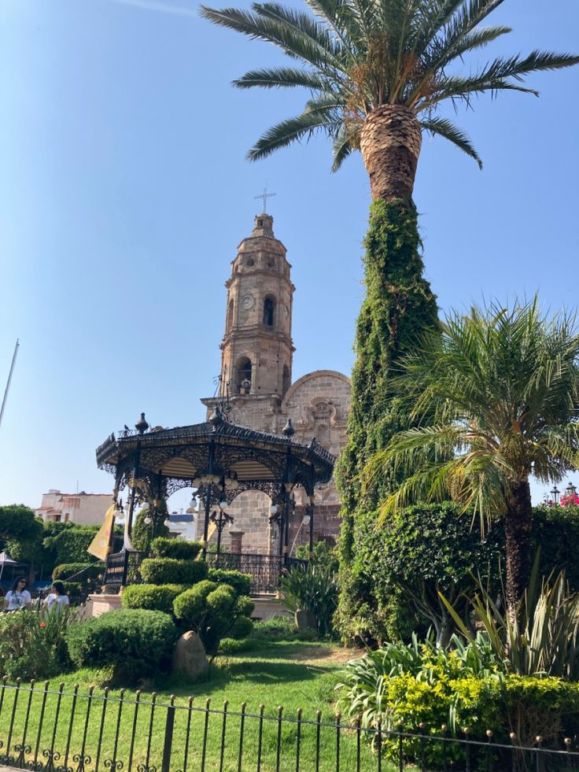
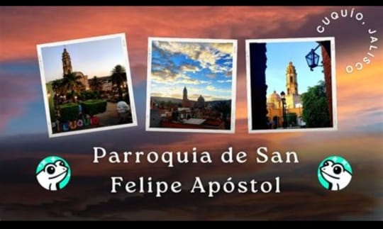
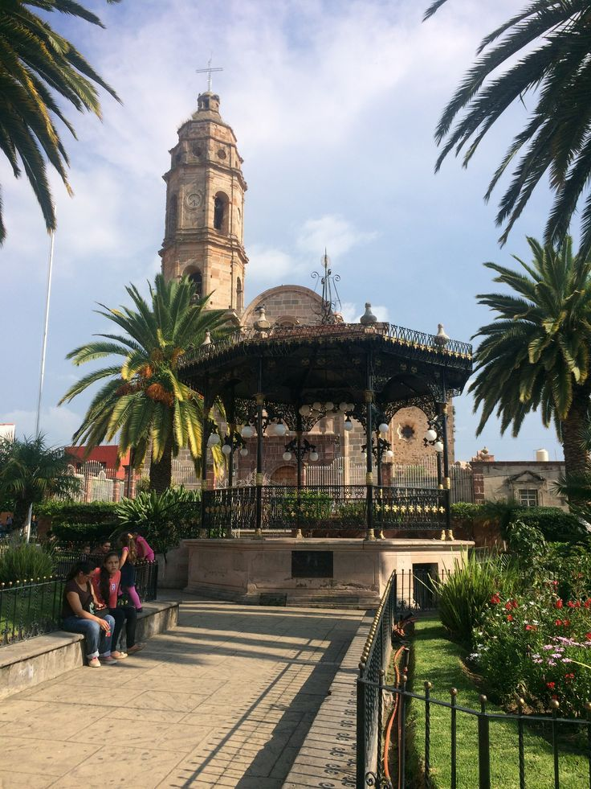

Cuquío, Jalisco, es un municipio profundamente arraigado en la religión católica, que es la predominante en la región.
La fe católica se refleja en la vida diaria de sus habitantes, sus tradiciones y, especialmente, en su arquitectura religiosa.
Religión predominante y templos en Cuquío ya que en la mayoria de las Rancherias la Religion Catolica es la predominante siendo
algunas pocas Religiones practicadas por algunas personas, algunas de ellas o las mas conocidas son Testigos de Jeova,La luz del Mundo,
Aleluyas,Cristianos,etc.
La religión católica es la principal en Cuquío, y el municipio cuenta con varios templos importantes, entre ellos:
-Parroquia de San Felipe Apóstol (templo principal de Cuquío)
Ubicación: Plaza Principal, Cuquío,
Jalisco.
Este es el templo más emblemático del municipio,
conocido por su arquitectura colonial
y su importancia histórica y religiosa en la comunidad.
-Templo del Sagrado Corazón de Renegul
Ubicación: C. Álvaro Obregón, 45480 Cuquío, Jalisco.
Templo San Juan Pablo II
Ubicación: C. Prolongación Cuauhtémoc 518, 45480 Cuquío, Jalisco.
-Templo Los Dolores
Ubicación: Calle Hermenegildo Galeana 36, 45480 Cuquío, Jalisco.


